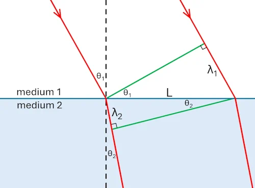

Definition of Refraction
Refraction is the change in direction of a wave when it passes from one medium to another. This change in direction is caused by a change in the wave's speed. For light, a medium's optical density determines the speed of light within it. The measure of this optical density is called the refractive index (\(n\)).
Snell's Law

The relationship between the angles of incidence and refraction and the refractive indices of the two media is described by Snell's Law:
$$ n_1 \sin(\theta_1) = n_2 \sin(\theta_2) $$
Where \(n_1\) and \(\theta_1\) are the refractive index and angle in the first medium, and \(n_2\) and \(\theta_2\) are for the second medium. The angles are always measured from the 'normal' - a line perpendicular to the surface.
In this simulation, light travels from air into another medium. The refractive index of air (\(n_1\)) is approximately 1.00. Let \(n_2 = n\). Substituting this into Snell's law gives:
$$ 1 \cdot \sin(\theta_1) = n \sin(\theta_2) $$
$$ n = \frac{\sin(\theta_1)}{\sin(\theta_2)} $$
This shows that a graph of \(\sin(\theta_1)\) vs \(\sin(\theta_2)\) will be a straight line with a gradient equal to the refractive index, \(n\).

Because the frequency of a wave (\(f\)) is constant, but the
speed of light (\(v_1\) and \(v_2\)) is
different in the two media, the wavelength must change. This follows
from the fundamental wave relationship: \(v=f\lambda\), which means \(\lambda=v/f\).
In medium 1: \(\lambda_1=v_1/f\)
In medium 2: \(\lambda_2=v_2/f\)
The diagram shows two wavefronts (the green lines)
approaching the boundary between two media. They are obviously separated by one
wavelength. The first wave has fully entered medium 2 and the second wave is on
the point of entering it.
Consider the two right-angled triangles formed by the
wavefronts and the boundary line.
The top triangle (in medium 1) has a hypotenuse of length L. The side opposite the angle of incidence (\(\theta_1\)) is the distance between two wave crests, which is the wavelength in that medium, \(\lambda_1\). From basic trigonometry,
we can write:
$$ \sin(\theta_1) = \frac{\lambda_1}{L} $$
The bottom triangle (in medium 2) shares the same hypotenuse L. The side opposite the angle of refraction (\(\theta_2\)) is the wavelength in the second medium, \(\lambda_2\). Similarly, for this triangle:
$$ \sin(\theta_2) = \frac{\lambda_2}{L} $$
Now, we can rearrange to find the common side L in
both equations:
$$ L = \frac{\lambda_1}{\sin(\theta_1)} \quad \text{and} \quad L = \frac{\lambda_2}{\sin(\theta_2)} $$
Since L is the same for both, we can set the two
expressions equal to each other:
$$ \frac{\lambda_1}{\sin(\theta_1)} = \frac{\lambda_2}{\sin(\theta_2)} $$
Now, substitute the expressions for wavelength (\(\lambda_1=v_1/f\) and \(\lambda_2=v_2/f\)):
$$ \frac{v_1/f}{\sin(\theta_1)} = \frac{v_2/f}{\sin(\theta_2)} $$
The frequency (\(f\)) is on both sides, so it cancels out,
leaving us with:
$$ \frac{v_1}{\sin(\theta_1)} = \frac{v_2}{\sin(\theta_2)} $$
Rearranging this gives Snell's Law, expressed in terms of
velocities:
$$ \frac{\sin(\theta_1)}{\sin(\theta_2)} = \frac{v_1}{v_2} $$
Refractive Index and Wavelength
When light enters a new medium, its frequency remains constant, but its speed and wavelength change. The relationship is given by:
$$ \frac{n_2}{n_1} = \frac{v_1}{v_2} = \frac{\lambda_1}{\lambda_2} $$
This means that in a more optically dense medium (higher \(n\)), the speed and wavelength of light both decrease.